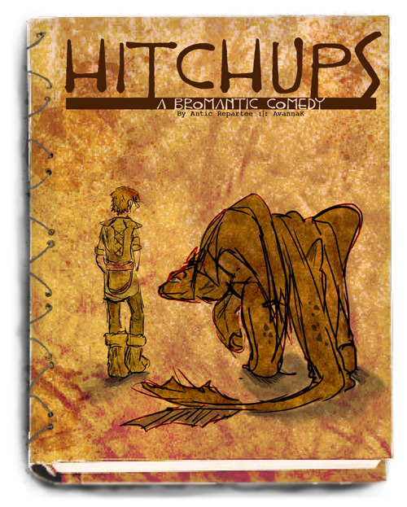
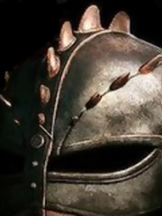

How to Train Your Dragon
Top Pick
Hitchups by The Antic Repartee
Hiccup didn't see the point in stopping Astrid as she ran off towards his village, towards his father, with his most desperately protected secret. He was leaving anyway. A coming-of-age tale and borderline bromantic-comedy that answers the "What if Hiccup had left Berk?" question better than anyone else. The world is fleshed out with history, mythology, and politics as Hiccup travels from Berk to the Byzantine Empire. Meanwhile, Hiccup's absence gives the characters on Berk more room to develop, especially Astrid and Gothi. The friendship between Hiccup and Toothless is a treasure greater than any they find during their time as pirates. Whether for the conversations with sea serpents, the bromantic banter, or Toothless's stint as a cat god, this epic adventure is a must-read for all HTTYD fans.
Drama
Becoming Lifbrasir by Midoriko-sama
People often wondered what kept Hiccup going during those early years. When that single, most-treasured thing is taken from him, there is little left to keep him on Berk. The day Stoick returns, and the day before the best recruit is finally chosen, Hiccup leaves Berk, little knowing that he would one day return under... strange circumstances. Those strange circumstances involve a disguised Hiccup returning to Berk as a masked dragon trainer, helping his reluctant friends bond with dragons as a last ditch effort in the war against the Red Death. Viking culture and book characters like Camicazi and Thuggory enrich the existing the HTTYD world. The true strength of this adventure, however, is the various relationships, especially the burgeoning romance between Hiccup and Astrid, the stubborn rivalry between Hiccup and Stoick, and the growing feud between Ruffnut and her family.
Prodigal Son by commandocucumber
Eight years after Berk's heir vanished, the Viking town is slowly crumbling. Dragon attacks are more devastating than ever. To save her village Astrid must piece together exactly what happened before the dragons wipe them all out for good. Meanwhile, half a world away and eight years wiser, Hiccup decides it might just be time to go home. Although still unfinished, this drama has rightfully claimed its place as one of the best HTTYD fics out there. It is unafraid to explore controversial subjects like religion and war, which results in bigger stakes and better characters. The strategic maneuvering of Astrid and Fishlegs back on Berk is just as fascinating as the losing battle Hiccup is waging in Alexandria. It's a slow-boiler that will leave you racing through chapters late at night.